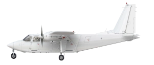

Britten-Norman

BN-2
MKIII
Game Stats
Other Information
Game Stats
Other Information
The Britten-Norman BN-2/MKIII are light aircraft produced by Britten-Norman.
In-game
Both models are pretty unused, both having under 30 units in circulation. The Trislander has 25+ units, while the Islander has under 10.
Specs
Trivia
- The BN Islander has been in production since 1965,
- There have been 18 commercial variants of the Islander.
External Links
- Britten-Norman ( Islander ) ( Trislander ) on Wikipedia
- Manufacturer's site
Gallery
Original content from
Airline Club Wiki
. Licensed under CC-BY-SA.